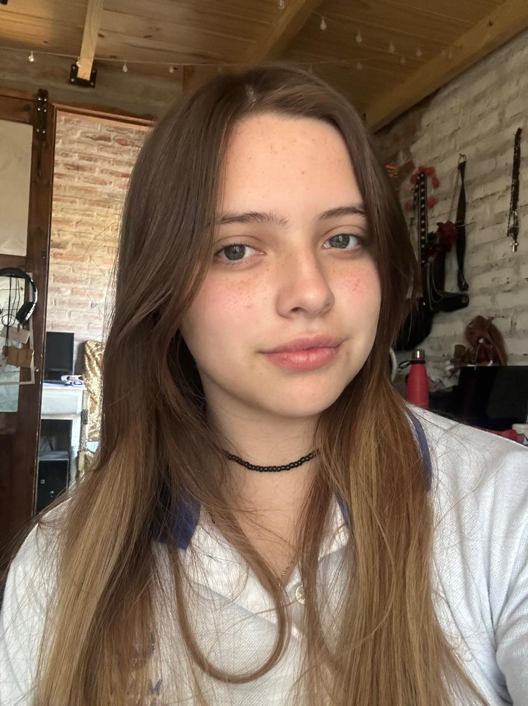
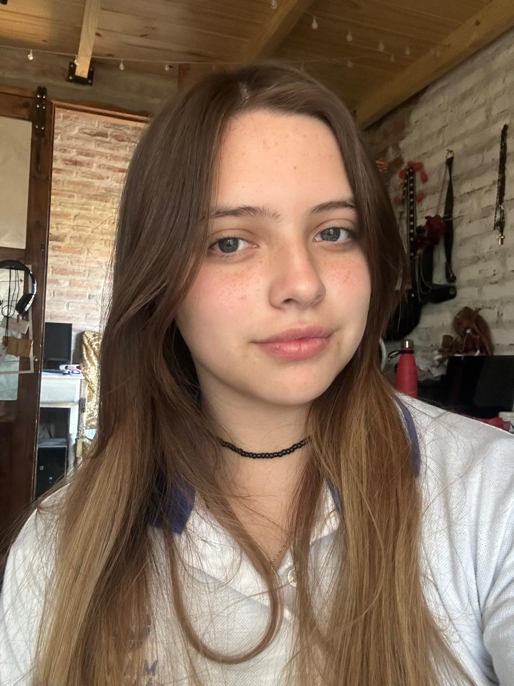

Somos CAdo
Creciendo juntos, paso a paso

Somos CAdo, un proyecto que busca asistir no solo a los adolescentes, sino también a los pre-adolescentes y adultos para que puedan ayudar y aprender sobre lo que es la adolescencia con sus cambios. Buscamos que la adolescencia no sea una etapa de separación y odio, sino una etapa de cambio para todos. Por eso ofrecemos
Acompañamiento
Crecimiento
Comunidad
0+ adolescentes acompañados
0+ talleres realizados
0+ educadores aliados
 
